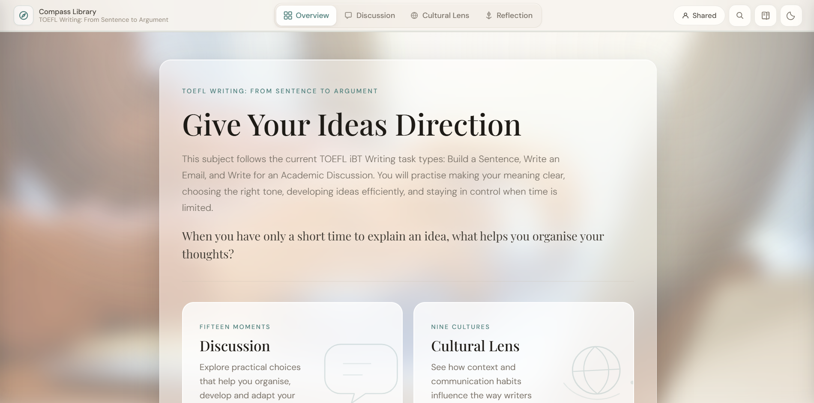
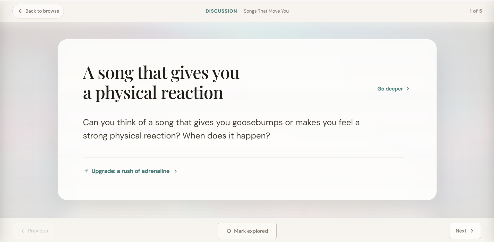

01 Subject cover
A world worth opening.
Give a subject its own identity.
A first glimpse of where the lesson could go.

Inside Atlas
A creative teaching workspace for recurring one-to-one English lessons. Create or choose material, shape it around the learner, and return with context, language and momentum already there.
01 Subject cover
Give a subject its own identity.
A first glimpse of where the lesson could go.
02 Compass overview
A structured subject, ready to explore.
Discussion, cultural perspectives and reflection.

03 · Focus mode
Space for the question. Room for the answer.
Teach directly from Atlas.

Atlas overview
A short introduction to creating, shaping and teaching with Atlas.
Why Atlas exists
What gets lost
What Atlas changes
Atlas brings the material, the learner and the teaching history into one workspace.
Instead of searching and rebuilding before each lesson, tutors can create or adapt what they need in seconds, then carry material, adaptations and learner context forward. Less of the tutor’s work disappears when the lesson ends.
Create
Start from a topic, learner interest, language target, current event, exam goal, professional situation, concept, question or your own idea. Add a level or brief when it helps. Atlas turns it into a structured Compass subject.
Some forests seem ordinary in daylight and completely different after dark. This subject explores the organisms that can make a forest glow, why bioluminescence exists, and what happens when science makes a familiar place feel strange again.
Atlas is not asking you to work inside a fixed syllabus. You can build around exactly what your learner needs, cares about, is studying, is curious about, or simply wants to talk about.
You can also open something already ready, continue previous material, search, ask for an idea, or return to your own library. It is all in the same environment.
Teach
Compass gives you substantial, structured subjects to teach through. Arcade gives you conversation games with a different rhythm. Two distinct teaching worlds, ready when you are.
Make it yours
Start with an Atlas Original, save your own version of it, create a subject yourself, or build a custom Session Subject for one learner.
Make the material sound, feel and work like you. Rewrite the questions. Change the framing. Choose the cover. Add artwork if you want it.
Save your own version of an Atlas Original, create material for your teaching library, or build a custom Session Subject for a learner.
Continuity
Neither does your preparation. Atlas carries the learner context forward: About, interests and notes, explored material, saved language, recent activity, Continue, Review and Arcade progress. Session Subjects give each learner their own custom material; My Subjects is your reusable teaching library.
Explore Atlas
Open Atlas, choose a subject or game, and use it in your next lesson.